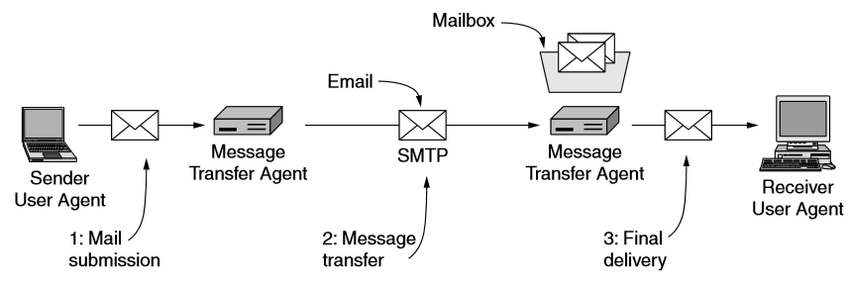

Electronic mail is a method of communication that uses the Internet to send messages. Sender sends the mail to the recipient with informations like receivers address, message, etc.
Imagine you're sending an email. You open your email software, also known as the User Agent. It's like a magical tool that helps you send and receive messages.
When you compose your email, the User Agent prepares it for sending. It's like packaging your message with the recipient's address and the content.
Now, your email is ready to embark on a journey. The Mail Transfer Agent (MTA) takes over, acting as a messenger. It transfers your email from your email server to the recipient's email server. It's like a magical courier navigating through the internet.
Finally, your email arrives at the recipient's email server, where it's stored in their Mailbox. It's like reaching the gates of a castle, waiting to be retrieved.
When the recipient opens their email software, their User Agent connects to their email server and retrieves the message from their Mailbox. It's like opening a treasure chest to reveal your email.
And that's how the components of an email work together. The User Agent helps you compose and send messages, the MTA transports them, and the Mailbox stores and retrieves them. It's like a magical journey connecting people through digital messages.

Email addresses are used to identify the sender and the recipient of a message.
The format of e-mail address is :
User @ domain-name
The mail format is a set of rules that defines how the message is composed and sent.
The mail format is composed of the following parts: